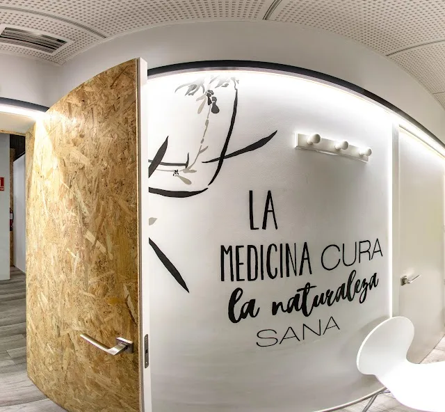
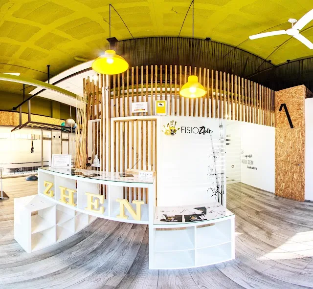
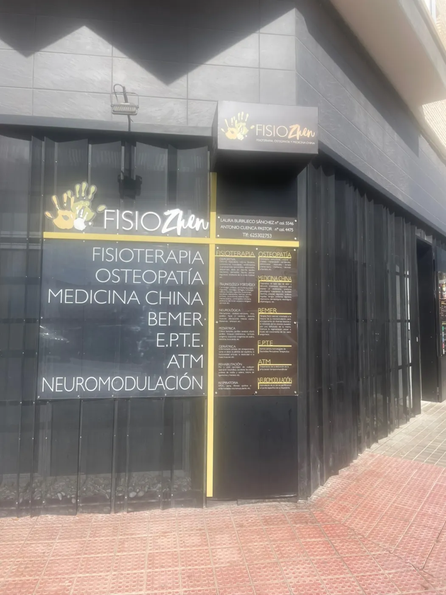
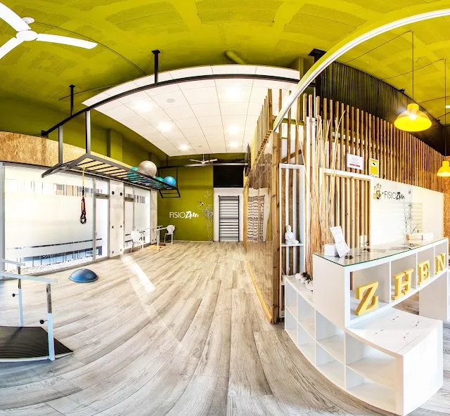
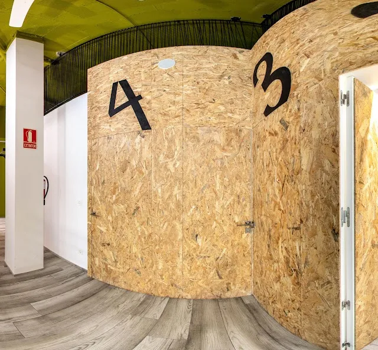

Fisioterapia y readaptación
Lesiones musculares, articulares y deportivas. Tratamiento manual y ejercicio pautado para volver a tu actividad.
Clínica de fisioterapia · Petrer
Fisioterapia, osteopatía y acupuntura en Petrer. Te escuchamos, te explicamos qué te pasa y te acompañamos hasta que vuelvas a moverte con normalidad.
5,0 101 reseñas en Google

Tratamientos
Combinamos la fisioterapia de siempre con la medicina china para tratar el cuerpo como un todo. En la primera visita valoramos tu caso y te proponemos un plan.
Lesiones musculares, articulares y deportivas. Tratamiento manual y ejercicio pautado para volver a tu actividad.
Técnicas manuales suaves para recuperar la movilidad y aliviar tensiones de espalda, cuello y pelvis.
Para el dolor, la tensión y el estrés, desde una visión global del cuerpo. Sin ser agresiva.
Electrólisis percutánea y neuromodulación para tendinopatías y dolores que no terminan de irse.
Dolor o bloqueo de mandíbula, chasquidos y bruxismo, muchas veces relacionados con el cuello.
Terapia física vascular como complemento a tu tratamiento de recuperación.
Equipo
Te atiende siempre un fisioterapeuta titulado. Nos tomamos el tiempo de escucharte y de explicarte cada paso del tratamiento.
Fisioterapeuta · Nº Col. 4475
Fisioterapia deportiva, readaptación y medicina china.
Fisioterapeuta · Nº Col. 5546
Fisioterapia y recuperación funcional.
Opiniones
«Venimos por una lesión de muñeca bastante persistente en tenis y el abordaje ha sido impecable. No solo se limita a aliviar el dolor: analiza la causa, te explica todo el proceso con claridad y pauta una readaptación brillante.»
«De verdad te escucha y combina la medicina oriental y occidental, entendiendo el cuerpo como una unidad. Llevaba años con dolor de rodilla y después de la primera sesión me sentía mejor que nunca.»
«Tengo un cuerpo muy delicado que no tolera los masajes convencionales. Tratan problemas con una delicadeza increíble; la acupuntura es efectiva sin llegar a ser nada agresiva.»
Pedir cita
Al enviar se abre WhatsApp con tu mensaje ya escrito para el 625 30 27 53. Si prefieres, llámanos.
Por WhatsApp no hace falta que nos des detalles médicos: con una idea general es suficiente, el resto lo vemos en consulta.
La clínica
| Lunes | 8:00–15:00 · 15:30–21:00 |
|---|---|
| Martes | 8:00–22:00 |
| Miércoles | 8:00–14:00 · 15:00–21:00 |
| Jueves | 8:00–22:00 |
| Viernes | 8:00–17:00 |
| Sábado | Cerrado |
| Domingo | Cerrado |


